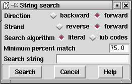
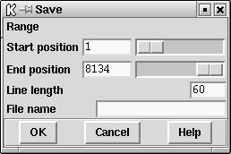

The Sequence display contains a subsequence or string search function which moves the cursor to the position of the next match. As shown in the dialogue the user selects the direction and strand over which the search should be performed, the search algorithm, the minimum percentage match, and the subsequence/string for which to search. The search algorithm allows either NC-IUB codes Cornish-Bowden, A. (1985) Nucl. Acids Res. 13, 3021-3030 or a literal search. The literal search will search for exact matches eg inputting a search string of "n" will search for the letter "n". The NC-IUB codes option can use any of the NC-IUB symbols shown in the figure below. Once activated the Search dialogue will remain visible until the user clicks on the "Cancel" button. The cursor will move to the next matching position each time the user clicks on the "Search" button, or will "beep" if there is no such match.

NC-IUB SYMBOLS
A,C,G,T
R (A,G) 'puRine'
Y (T,C) 'pYrimidine'
W (A,T) 'Weak'
S (C,G) 'Strong'
M (A,C) 'aMino'
K (G,T) 'Keto'
H (A,T,C) 'not G'
B (G,C,T) 'not A'
V (G,A,C) 'not T'
D (G,A,T) 'not C'
N (G,A,C,T) 'aNy'
Saving the contents of the sequence display to a file
The Sequence display contents can be dumped to a file by selecting the "Save" option from the menu. Whatever options are currently activated (i.e. which of restriction enzyme sites, translation, ruler and strands) will be written to disk. The user can define the region of the sequence for which to dump the results and the name of the file to use.
